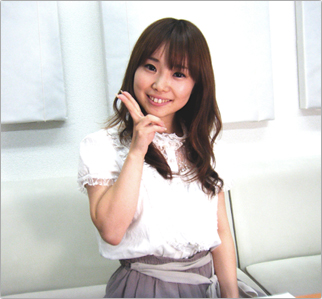

|
|
第五回
キャストコメント：
志村 由美（シオン役） |
|
|
! 第十一回 !
次回は近日更新予定です♪ |
|
|
|
そんな訳で『eden*』スペシャルコンテンツ第五弾からは、この期に及んで新シリーズ“キャストさんコメント”更新開始！
一発目にあたる今回は、ヒロイン・シオン役の 志村 由美さん のコメントムービーです♪ 映像新世紀ですよ！
あんな大勢いそうなアニメのキャラクターや、そんな格闘ゲーム系女子等、様々なキャラクターを演じて来た乙女戦士……そんな志村さんに、『eden*』音声収録の合間に、ご自身の演じた“シオン”、そして作品についていろいろお話を聞いてみました。
音声収録時ということで、ある意味、最も“シオン”な状態かもしれない映像をご覧あれ。
2009年 収録スタジオにて
|
|
スペシャルコンテンツ第六回は、9月初旬頃の更新を予定しています。
|
|  |
|
志村 由美
気さくにコメントにお答えくださった志村さん。ご本人の背格好を見て、「シオンは本当にいたんだ」と思った諸兄もいらっしゃると思います。全く同感です。
（紹介文：インタビュアー 相良）
[ 関連リンク ]
> ブログ：ちっちゃないっぽ☆
|
|